ADJUS TABLE WIRE BILLY HOOK
It is worth while making a couple of adjustable wire billy hooks if you go camping frequently. The advantages of being able to have one billy high above the flames so that it can simmer gently, and another right down over the fire to boil quickly, is apparent.

The adjustable billy hook is held at whatever height you set it by the link which locks it securely.
In addition to your billy stick and billy hooks, you would be well advised to make a pair of fire tongs. They will take only a few minutes, but may save a badly burnt hand.
Another improvised pair of fire tongs uses a narrow but long fork, and a single stick through its crotch.
WOODS HED
And finally, you will want to be prepared against a spell of wet weather, and so you’ll need a small woodshed. Only then will there be a supply of dry kindling and wood after heavy rain.

The ground dimensions of your woodshed should be at least three feet by four, and about three feet high at the front. It should be to windward of your fireplace, so that windblown sparks will not fall on dry bark or other tinder.
FIREWOOD AND FIRE IN RAIN
Firewood gathered from the ground after rain will be damp and unsuitable for a good fire. This applies to winter conditions and in rain forest, except after a long drought. It is far wiser, if you want a good fire, to pull down dead branches standing on trees for your firewood store. This wood is always reasonably dry.
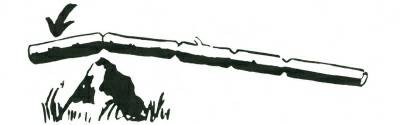

When cutting thick sticks into short lengths, an easy way is to make deep cuts, opposite each other, on either side of the stick, and then, taking the stick, bring it down sharply on to a convenient log or rock, with the cut area at the point of impact. One sharp blow will generally break the wood, and you will save yourself the work of cutting right through the wood.
Always cut and store an ample supply of firewood in your woodshed in a standing camp. You never know when you may get a spell of rainy weather. Lighting a fire with wood soaked after a heavy night’s rain is not easy, even for the expert, and you’ll appreciate your store of dry wood.
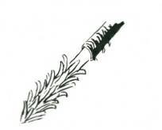
After rain or heavy dew, you can start a fire by picking a big handful of thin dead twigs from nearby bushes. Hold these in your hand and apply the match flame to the end of the twigs. Keep twisting and turning until the whole handful is well alight.
If the twigs are too wet you may have to make a few “fuzz”
sticks. Select dead wood standing from a shrub and break into sticks about f-inch thick and ten inches long. Cut away the wet outer wood, and trim the dry wood down in feathers. Three or four of these “fuzz” sticks will start your fire.
If it is raining heavily at the time, start your fire in your tent, and carry the twigs or “fuzz” sticks when well alight to the fireplace in your billy. Shield the early fire from the rain with your body. A slush lamp (page 101) will always start a fire, even with wet twigs.
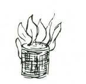
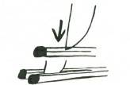
The bandage in your first-aid kit previously soaked in kerosene will give you a starter for a fire. The kerosene will not affect the usefulness of the bandage.
You can make one match light two fires by splitting the match.
Hold the point of a sharp knife just below the head of the match and press down sharply. When using a split match to light a fire prime the twigs with dry grass or teased dry bark fibre.
BOILING AND BAKING WITHOUT UTENS ILS
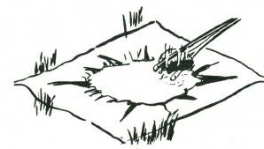
In emergency you may want to boil water, or cook food in boiling water, and you have no billy or utensil of any kind. This difficulty can be overcome by scooping a shallow hole in the ground and lining it with your groundsheet, some newspaper, a shirt, or any material which will hold the water. Build a quick fire of small sticks in which to heat twenty or thirty stones each two or three inches in diameter. Be very careful not to take these stones from a creek bed. Such stones may explode in the fire and injure you.
Fill the shallow hole with water, and when the stones are nearly red hot, which will take at least ten minutes, lift them one at a time from the fire with a pair of fire tongs and put gently into the water in the hole. The hot stones will not burn the paper or cloth, and five or six stones will bring a couple of quarts of water to

boiling point in a matter of two or three minutes. Boiling temperature can be maintained for an indefinite period by putting in the other stones singly. Remove the cold stones when you put the hot ones in.
BARK DIS H OR COOLAMIN
One method of improvising a cooking utensil is to make a bark dish, or Aboriginal “Coolamin”.
A flat piece of bark, of a species which will not split easily (the bark of many trees has this quality; one is the ficus family, or “fig trees”; test first by stripping a small piece of bark from one of the branches), is softened in the hands, and then the two ends are folded as in the illustration and pinned with a thin, sharpened peg or tied to hold them in position.
A coolamin can be used for all sorts of cooking with hot stones.
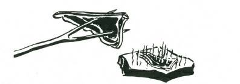
It is necessary to use the bark of green trees for a coolamin. If the sap is coloured, particularly if it is white or whitish and you can’t be sure it is “latex” or “rubber”, be extremely careful not to get it in your eyes. M any saps can “burn” your skin, or blind you temporarily.
M eat can be grilled by using a forked stick with the fork ends sharpened. Alternatively, you can place a flat stone in the fire and get it nearly red hot. This hot flat stone should be removed from the fire and dusted clean. Place the meat to be cooked on it, and the meat will grill perfectly.
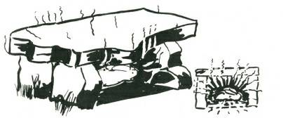

Baking can be done by making a stone oven, in which you light the fire and, when the stones are "sizzling" hot, draw the fire out of the oven, and place your scone or meat in the heated cavity. It will cook perfectly, and cannot burn, because the temperature is falling all the time.
An oil drum or large tin, if available, can be made into a good oven. Coat it thickly with several inches of clay. Build your fire either in the drum or tin, which is used like the stone oven, or


alternatively, set the tin over a trench fireplace, and build one fire in the trench and another on top of the tin.
Another ready-made oven is to fire a hollow log or old stump.
When the hollow is alight, place your cooking (covered on top and underneath) inside. You will have to watch all the time your food is cooking, because the fire may be too fierce and burn the baking. If the fire gets too fierce, damp it off with splashes of water.
The best baking is done by wrapping the food in either a coating of clay or damp paper, and then burying it in the hot dust

beneath your camp fire. Food can be left for six to eight hours without spoiling if the fire in not built up. The food will not overcook and you can rely on it being tender. This is one of the best ways to cook freshly-killed meat, which would otherwise be tough. When cooking fish and game by this method, it is not necessary to pluck, skin or “draw” the carcase. The intestines will shrivel up, and the outer skin, whether fur or feathers, will peel off when you unwrap the clay or paper.
A variation of this method of “primitive” cooking is to dig a hole which is lined with stones. This hole is “fired” with a quick fire so that the stones are thoroughly heated. When the fire has died down and there is only hot white ash left, the food, wrapped as before, is placed on the heated stones, and the whole covered over with the dirt removed in the digging of the hole. In this, as in the previous method of cooking, the food will not spoil or be burnt, and can be left for six to eight hours.
The cooking methods outlined are adaptable to the needs of the moment. For instance, it would be waste of time to build a stone
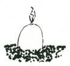
fireplace on which to cook a single meal when on a walking tour. It would be far easier to select a suitably sheltered position in the lee of an earthy bank or rock. On the other hand, in a standing camp, time is well spent in making a good fireplace, secure against wind and bad weather. It is assumed that the reader has sufficient common sense to use the cooking method and fireplace best suited to his needs and to clear trash away from the neighbourhood of the fire, also never to leave a fire burning in a vacant camp.
An egg can be baked by placing it in the hot ashes of your fire. But first you must pierce the shell and inside skin to allow the steam to escape. The egg will blow up if this is not done.

Water which is very muddy, dirty or stagnant can be clarified and sterilised and made quite safe for drinking by filtering and boiling with hot stones. A good filter is made from a pair of drill trousers with one leg turned inside out and put inside the other leg. The cuff is tied, and the upper part held open by three stakes driven well into the ground. Fill with the dirty water, and then drop in the hot stones. The water will filter through, and must be caught either in a billy or bark dish and poured back until the dirt has been filtered out and the water is boiling.
CAMP FURNITURE TABLES
A camp table and seats are worth making if there are five or six people in a standing camp, even if only for a few days. The best


pattern of camp table is one which also carries the seats, and which will not become unbalanced or unsteady, even though several people sit on one side.
This is about the best style of camp table you construct. When you make it do not use green wood, but search through the bush and you will find dead timber, which is lighter in weight and quite strong, for forks and poles.
SHOWING THE FRAMEWORK WITH TABLE TOP POLES AND SEAT
POLES.
For the framework select two forked stakes at least three inches thick and four to five feet long. The length depends upon the soil, and how far you will have to drive the stakes into the ground to make them quite secure. The lower end of each stake is sharpened and the head bevelled. The first stake should be driven well into the earth, so that the lowest part of the crotch of the fork is three feet above the ground. The prong of the fork should be pointing out from the length of the table. When this stake is set, measure off the length you want your table, say, from four to seven feet, and drive in the other stake with its prong also pointing outwards-that is, away from the first stake. This stake must also be driven the same depth into the ground as the first stake. Cut four strong straight stakes, four feet six to five feet in length, and at least two and a half inches thick. Place these with one end in the crotch of the forks, and at right angles to the line of the forked stakes. Note where the sticks cross each other in the forks, and scarf out cuts in each, so that the two will nest together in the crotch. These side poles carry the table poles and the seat poles, so they must “seat” securely in the forks.
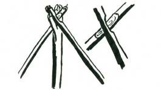
On to these side poles, and about two feet above ground level, two strong poles, two inches thick, are securely lashed. These poles are for the table, and later straight sticks are laced side by side across these poles for the actual table top.
Fifteen inches above ground level, two very strong poles, three inches thick and seven or eight feet in length, are lashed. These lashings must be very tight to make these two poles secure to the two side poles and also to the forked stakes you first drove into the ground. These poles serve both as a bracing to carry the seat.
Your table is now ready for finishing. Cut short, straight sticks for the top. You will need eight sticks for every foot in length of table top. The method of lacing these to the table top poles is shown in the sketch below.
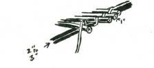
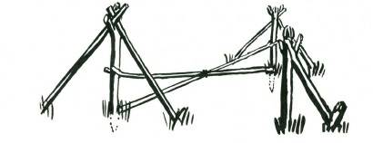
The seat-sticks–at least three to four inches thick–are cut a foot longer than the length of the table. You will need at least three of these seat-sticks for each side. They are not lashed to the cross poles, but allowed to lie on them, so that the distance of the seat from the table can be adjusted by either pushing the sticks back or pulling them in.
SHOWING HOW TO BRACE YOUR TABLE IF THE GROUND IS SOFT
OR SANDY.
If the ground is soft, or loose sand, your table will require bracing, and this can be done simply by two diagonal braces from


the table level of each of the forked stakes to the foot of the other.
Where the bracings cross, they should be lashed. An alternative is to cut two five-foot forks and brace with these so that they “jam”
below the forks of the stakes in the ground. Their own butts must be firmly seated on the ground and held from slipping; by a stout peg driven well in the ground.
This type of structure is recommended for a portable table. When securely lashed the whole table is extremely strong. A fly thrown over the top bar can be used to give shade.

Another type of camp table, suitable for dry country, is to simply dig two trenches, two or three feet apart on their inside edges, and at least ten to twelve inches deep. This is only suitable when the earth is clayey or firm enough to be dug in clean sods.
Sods are used to give height to the seat. When digging such a table, remember to replace the sods when you leave the camp site.
When using an earth table it is advisable to weave a couple of grass mats to lay over the seat. These will keep your clothes clean, and only take a few minutes to make on a camp loom.
CAMP CHAIRS
A comfortable camp chair can be made in ten or fifteen minutes and will give you hours and hours of comfort. Select two stout forked sticks, four feet long and three inches thick. The forks must be at a wide angle, and cut with the straighter of the two prongs

about nine to ten inches long, and the other wide angled prong about twelve to fifteen inches. Cut another stout forked stick about four feet in length, and leave the prongs of this sufficiently long to hold the two sticks you have previously cut.
SHOWING THE THREE MAIN STICKS REQUIRED FOR A GAMP
CHAIR.
Across the seat portion of the chair, lash straight sticks about an inch thick, and continue these up the back of the chair. On the seat portion they must be close together, but on the back they can be spaced two or three inches apart.
SHOWING THE FRAMEWORK OF A CHAIR USING HOOKED STICKS.

There may be difficulty in finding two sticks with wide angled prongs, in which case you can make your chair by using two hooked stakes. The crotch of the hook should be about eight inches above the end of the stick, and the sticks themselves should be about three feet six inches long.
Two side poles, each about five feet long, are laid one each through the hooked portion of the sticks, which have their upper ends lashed together. These two poles are lashed together behind the chair, and a forked pole, leading from the upper end where the hooked stakes are lashed, comes back to these two side poles and is lashed again. This gives you the framework for your chair.
Occasionally you will find a pair of twisty sticks which, lying on the ground, will look like this–
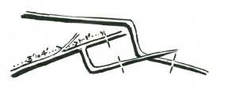
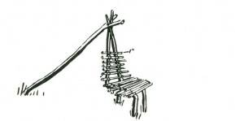
but, if you are quick to see the opportunity they present, you will convert them into a seat like this:
A good bushman makes himself comfortable wherever he may be. The simplest seat, of course, is either to roll up a log, or failing that, to select your site where a fallen tree will serve you. Such are not always to be found, and you can often make a comfortable seat by using a few stones to build up a platform, and between these you can lay two or three poles for your seat.

CAMP S EAT
A very comfortable fireside camp seat can be made by driving two short stakes into the ground, so that the forks are pointing outwards, that is, away from the opposite stake. The bottom of the forks should be from 8 to 10 inches above the ground level.
Two back forked stakes about three feet six inches long are driven into the ground, 15 to 18 inches behind these two short stakes. These back stakes should be driven in on a slight angle, leaning away from the two forward forks. The forks of the rear stakes should point outwards.
Both short and long stakes should be not less than two inches thick and the fork at least one and a half inches thick.
The short stakes should be at a convenient distance from the fireplace, anything from three feet to six feet, depending upon the

size fire you usually build.
Cut two crossbars, each about 3 inches thick, and cut nicks in these so they fit snugly in place in the forks, and connect front and rear forks.
Lengthways, lay straight smooth sticks, one to two inches thick. These must be close together. Along the back, that is to the tall stakes, lash similar sticks from 2 to 3 inches apart.
This makes an excellent fireside camp seat, and the comfort it gives you will well repay the half-hour it took to build.
CAMP BEDS
A sound night’s rest is worth ten minutes’ toil. Time spent in making a camp bed that will keep you both comfortable and warm
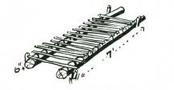
is time well spent.
Cut two poles six or seven inches thick, and about seven feet long. Lay these parallel to each other, three feet apart; and to prevent them rolling, put pegs at head and foot, driven well into the ground with about a foot of the peg above the pole. Cut about twenty or thirty straight, strong sticks, three and a half feet long, and lay these every four inches across the two poles. Now on top of these cross sticks place two poles, three to four inches thick and seven feet long. They should lie against the pegs driven in to hold the two “bed” poles secure.

At the head end of the bed, lay about half a dozen cross sticks on top of these last two poles. Now cut green brushwood, fern, or waste green stuff, such as sucker growth, or weedy bush material, and put this so that the main stalks are lengthways along the bed.
Pile it high between the two top poles, and lying across the cross sticks. The resulting bed will be as springy and comfortable as any you have ever slept on in your life.
If you are going to be in camp for a long period, you had better make yourself a camp mattress from grass on the camp loom, and if bedding is short you can weave a covering from dried grass on the same loom, and sleep as warm and snug as if you were between the blankets in your own bed at home.
CAMP BED OFF THE GROUND
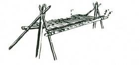
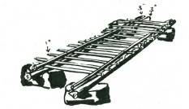
A framework, similar to the table, with the table top only, is made, and the two poles are overlaid with sticks exactly as for the bed on the ground. When making a bed off the ground it is not necessary to have the forks as high as for the table. A camp bed should always be built off the ground in bad snake country, or in areas where ground pests such as leeches, ants, scrub-mites, chiggers or ticks are liable to be troublesome.
An alternative to the forked stakes and ground poles is the use

of two piles of stones to support the sidepoles.
CAMP BED US ING A COUPLE OF BAGS
A very comfortable camp bed can be made by setting up the two forked stakes as for the preceding camp bed, and two side poles are placed into the crotches of these so they are about 45 degrees slope. Two long, straight poles are cut, and passed through the two sides of two bags (holes are cut in the bottoms of each of the bags to allow the poles to pass through). The closed ends of the bags are towards the ends of the poles, and the bags overlap a few inches in the middle. The two bed poles with the bags are laid one on either side of the angle poles. The weight of the body, lying on the bags, keeps the side poles pulled well down on the angle poles. If the weather is cold, or greater comfort is required, a stuffing of dried grass or bracken fern inside the bags will serve to give greater softness, and also make this type of bed warmer.

S TICK HAMMOCK
A camp loom is set up (see Camp Loom, page 97), and the hammock is woven, using vines, twisted bark fibres, grass rope or any suitable material for the weaving, and sticks about one inch thick for the cross parts. The hammock should be at least three feet wide by six feet six inches long. The end two spreaders should be two inches thick, and from these short lengths of rope are brought to the the hammock. A grass mattress, also woven on the camp loom, makes an excellent cover for the hammock.
CAMP LOOM
Two stout forked stakes, about two inches thick, are cut and driven into the ground with their lower prongs three feet above the ground, and facing away from the direction you wish to work. The distance between the stakes should be at least six inches wider than the widest article you want to weave. Across the forks a cross bar, about one inch thick, is laid. It is advisable to trim this cross bar of

twigs and roughnesses. It should be fairly strong.
Eight or nine feet from the cross bar, and on the side farthest from the prongs, a row of straight, smooth stakes, each about four feet long, is driven into the ground so that there are about two inches between the centres of the stakes. These stakes should be trimmed of any side twigs or roughnesses. A weaving bar, a few inches longer than the width of the row of stakes, is cut and laid on the ground, parallel and about six inches in front of this row of stakes.
Your camp loom is now ready to be set up for weaving.
An alternative to the row of stakes, and a considerable improvement if a situation is available, is to select a site where two trees are at a convenient distance apart. At ground level, and about seven feet above the ground, two stout cross bars, two inches thick, are lashed to the tree trunks, and to these crossbars a series of smooth vertical sticks are lashed at top and bottom. These sticks are about two inches apart at centres.
TO WEAVE ON A CAMP LOOM
Lengths of the weaving material are tied to the stakes as shown, brought back over the cross bar, and then forward and between the stakes, and then tied to the weaving bar in front of the row of stakes. (This is the “weft” of your weaving.) A ball of material is tied to the outside strand, and then passed between the two rows of strands (this is the warp), with the weaving bar lying on the ground. The weaving bar is lifted above the weft, and the ball returned again between the weft threads. Repeat by alternately lifting and lowering the weaving bar.
CAMP MATTRES S OR S TICK HAMMOCK
The weft or long strands are set up as for weaving, but instead of warp (cross strands), tufts of grass, fern or other material (or sticks if for a stick hammock) are passed between the weft. In weaving a camp mattress it is advisable to put in a warp tie every second or third lift. This binds the sides and prevents the outside weft strands spreading.
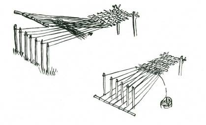
Strands of sun-dried grass, loosely spun, can be woven into a covering for a camp bed if you are without blankets. When weaving for this purpose, make sure that the warp strands are pushed closely up to each other. Do not try and make a camp blanket too heavy. It is better to make two light grass coverings than one heavy one... it is a number of layers, rather than extreme thickness of one layer, which keeps you warm.
WEAVING A CAMP HAMMOCK
Normally a hammock is made by using the netting tie, and netting needle (not shown in this book), but a serviceable hammock can be woven on the camp loom from bush materials. The ball of warp is passed around the weft threads to form an overhand knot on the lower lay of the weft, and these knots, pulled tight, make
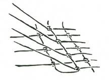